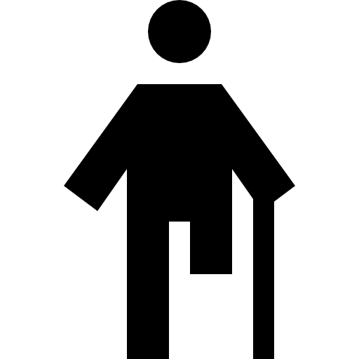

Turismo Acessível
Turismo Acessível - É um conjunto de ações para promover a inclusão e o acesso de pessoas com deficiência ou com mobilidade reduzida à atividade turística com segurança e autonomia.
EXPLORE LOCAIS ADAPTADOS DE ACORDO COM AS OPÇÕES ABAIXO:
Se desejar, filtre sua pesquisa por tipos de Recursos de Acessibilidade
Visual
Auditiva
Físico ou Motora

Mobilidade Reduzida